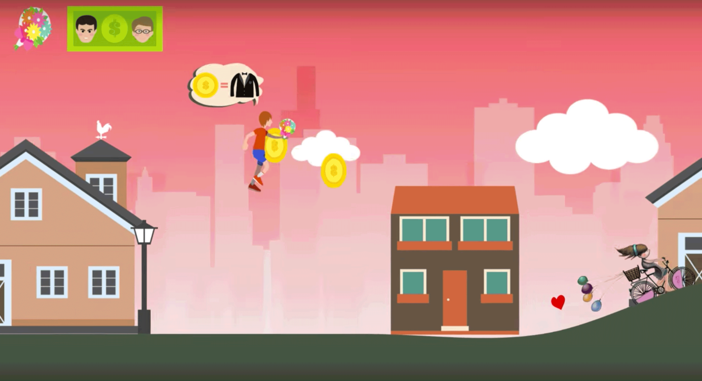

Love Story was developed for the story round for our Building Virtual Worlds course. The game is a 2D game where you play the role of a boy who leaves the city following his lover. The game progresses through the changes that happen in his life and how it takes an unexpected turn as he comes closer and closer to his dream. The game was developed using Unity3D.
